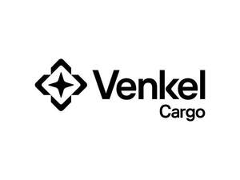

Trade Mark Journal No.2026/003 16 January 2026
UK00004315190 23 December 2025 (35,39)

- Class 35
- Import and export services of all kinds of goods for third parties; administrative services related to customs brokerage; business management of logistics for others; business administration in the field of transport and supplies; business consultancy services in document management in foreign trade and regulatory compliance in transport and supplies; advertising in transport and supplies; providing transportation documentation for others [administrative services].
- Class 39
- Transport; packaging and storage of goods; shipping agency services; transportation and storage; transport brokerage; freight and transport brokerage; distribution [transport] of goods by road; packaging articles for transportation; packing articles for transportation; operation of stations used for transport purposes; provision of data relating to methods of transport; transportation information; chartering of transport; computerised transport information services; providing transport and travel information via mobile telecommunications apparatus and devices; arrangement of transportation; arranging transport services by land, sea and air; arranging transportation of goods; arranging and providing transport by land, sea and air; computerised distribution planning relating to transportation; planning and booking of travel and transport, via electronic means; collection, transport and delivery of goods; collection, transport and delivery of goods, documents, parcels and letters; booking of transport via global computer networks; tracking of passenger or freight vehicles by computer or via GPS; consultancy services relating to transportation; advisory services relating to road transportation; advisory services relating to the tracking of goods in transit; cargo handling and freight services; services for the arranging of transportation; road haulage services; transportation of freight by land; providing information relating to the planning and booking of travel and transport, via electronic means; transportation and delivery of goods; storage of containers and cargo; storage of goods; storage of cargo before transportation; storage of cargo after transportation; storage of goods in transit; delivery of cargo by land; delivery by road; pickup and delivery of parcels and goods; freight [shipping of goods]; transportation and delivery services by air, road, rail and sea; storage and delivery of goods; distribution services.
VENKEL GLOBAL, S.L.
Representative: Murgitroyd & Company